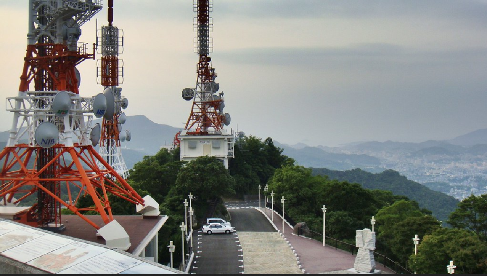

- FM Radio: Frequency modulated radio is the one that most people are familiar with and is the most accessible if you live in a faily populated area. This type of radio transmits information through the frequency of waves which results in a very high quality sound wave. The downside of FM is that it doesn't travel very far, se each town or city will usually have their own radio station.
- AM Radio: Amplitude modulation is the technique of encoding sound information in the size of the radio waves. The high quality is lost but you gain back some of the reach. AM radio is used for national radio broadcasts
- SW Radio: Shortwave radio is a little different in that it isn't a technique of modulating the radio waves, but rather a band in the radio spectrum which is called the shortwave band. Shortwave radio is also of lower quality when it comes to clarity of sound, however the upside is that these waves can be transmitted with incredibly low energy and can reach vast distances, even the other side of the world!
An FM station's transmitter antennas
The BBC is perhaps the world's most famous shortwave radio station.
A typical radio antenna
Remote antennas reaching small populations
Inside a french radio rec room
1watt transmitters used during the world wars

Radio antennas shouldn't be obstructed
The first radio station in the United States
An antenna farm
Radio waves propogation